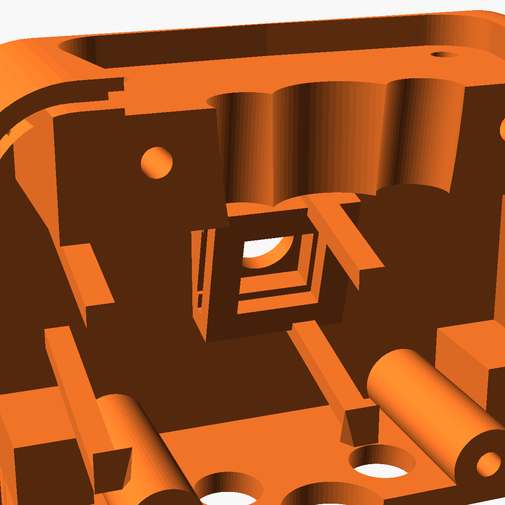
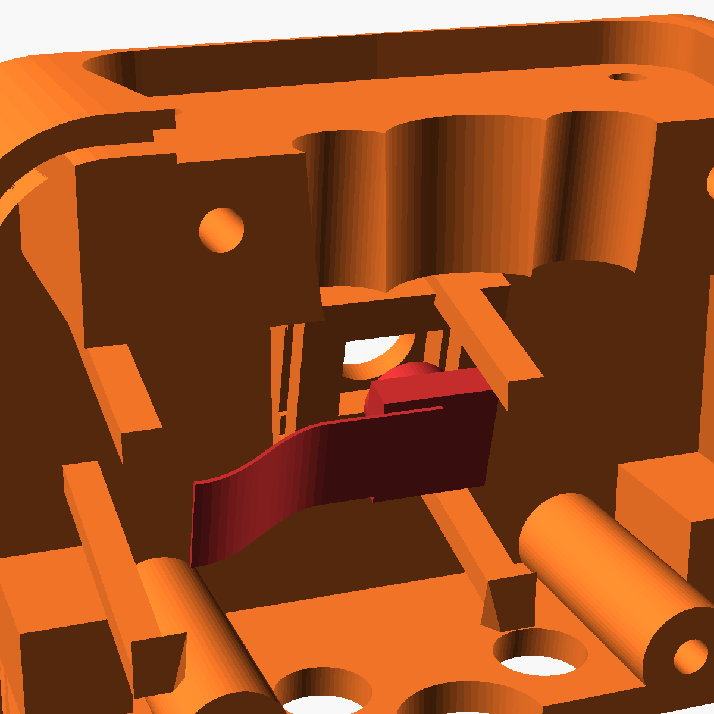
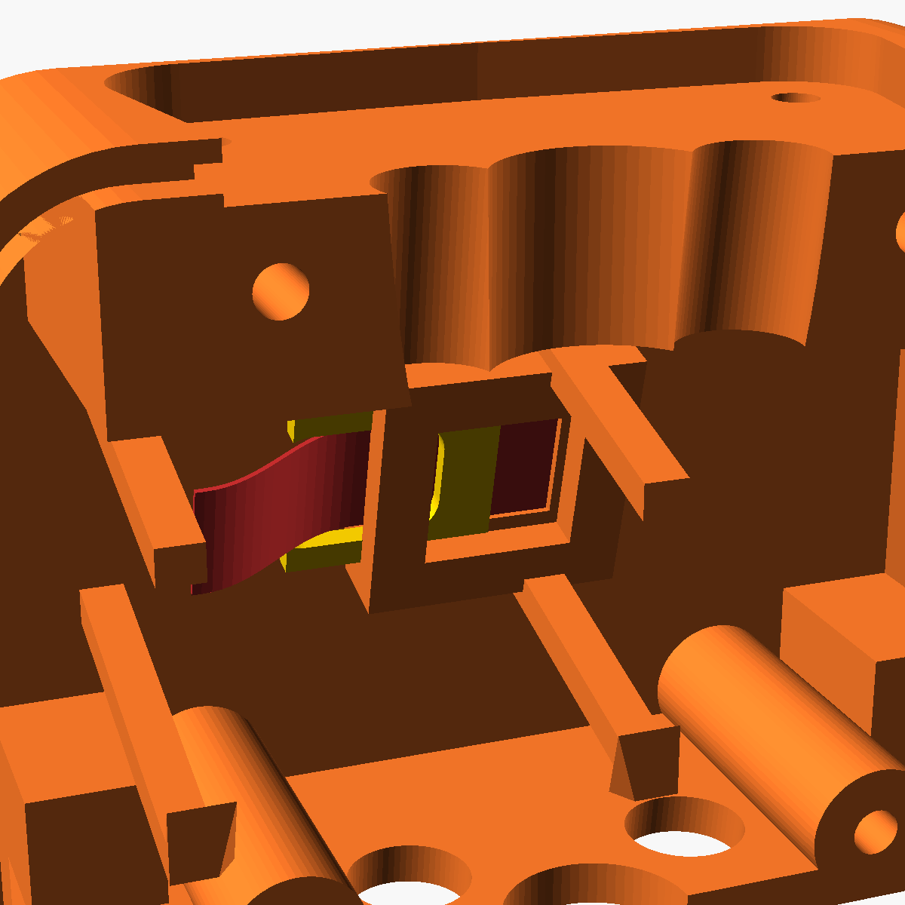
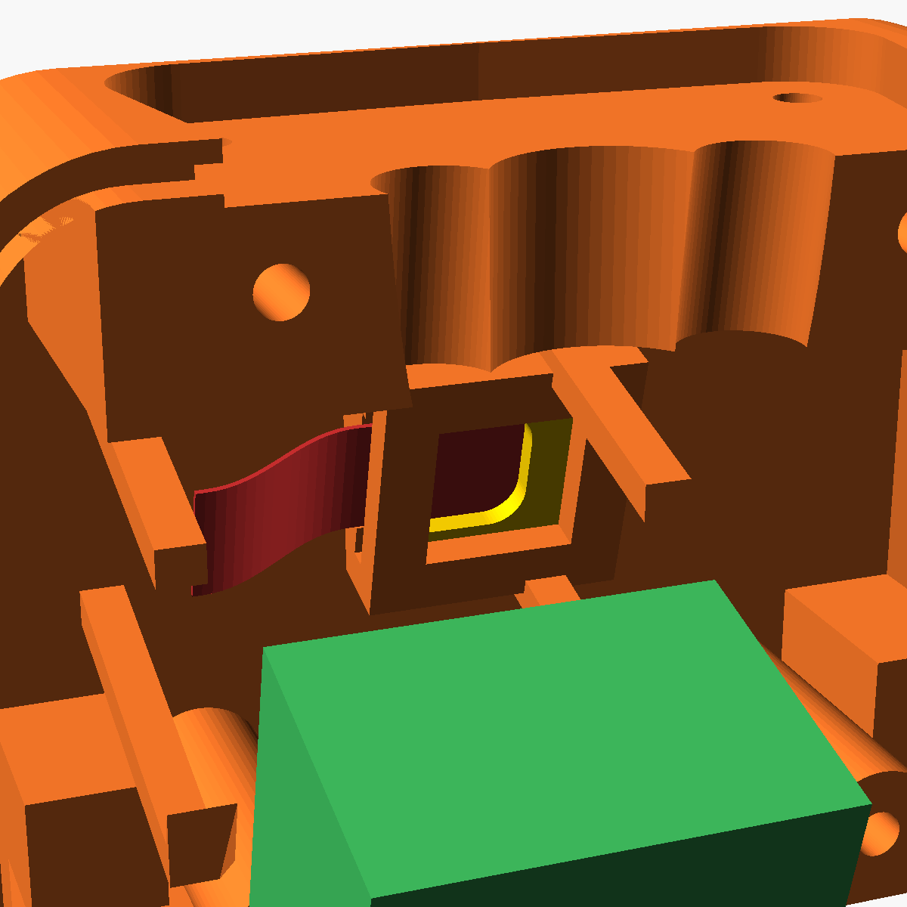
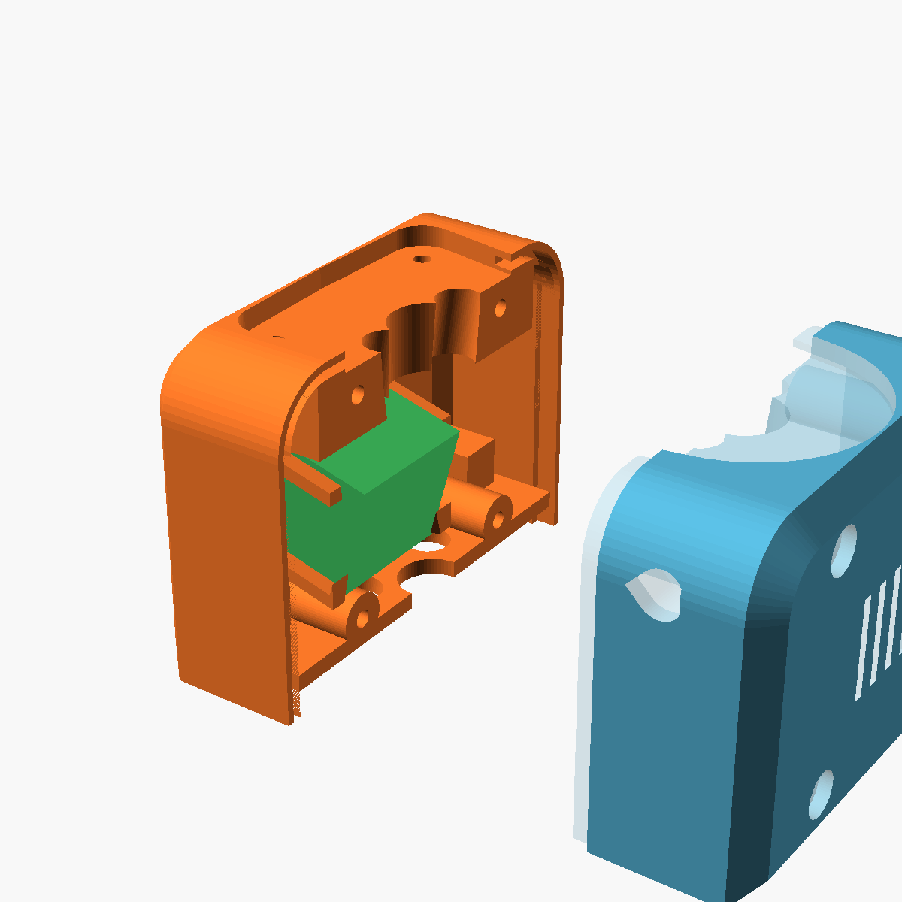

📷 Kamera und XIAO in den Roboter einbauen
MadBuddy Stufe 3 „Roboter“ · Dauer ca. 10 Minuten · kein Kleber, kein Löten bei diesem Schritt
🧩 Das Prinzip
Die Kamera sitzt innen in der Brust und schaut durch ein kleines Loch (Ø 6,7 mm) nach vorn. Ein flaches Druckteil, der Riegel, klemmt sie fest. Der XIAO darunter rastet zwischen vier Pfosten ein, die Rückwand hält alles von hinten. Alle Bilder zeigen das Brust-Vorderteil von hinten, so wie es vor dir liegt, wenn die Rückwand ab ist.🧰 Was du brauchst
| 🟧 | torso_front Brust-Vorderteil, Hals und Kopf sind schon daran montiert |
| 🟨 | cam_clip der Riegel, 1 Stück (in roboter_teile.3mf; flach drucken, 3 Wände) |
| 🟥 | Kamera das kleine Kameramodul mit Flachkabel, liegt dem XIAO Sense bei |
| 🟩 | XIAO XIAO ESP32S3 mit aufgesteckter Kameraplatine, Drähte schon angelötet |
| 🟦 | torso_back Brust-Rückwand |
| 🔩 | 4 Schrauben M3 × 28 und ein Kreuzschlitz-Schraubendreher |
⚠️ Die Rückwand muss ab sein. Bei geschlossener Brust kommst du nicht an die Kamera.

🔍 Was ist was?
- Tasche
- Das kleine quadratische Kästchen in der Mitte. Vorn darin ist das Linsenloch.
- Schlitze (Nuten)
- Zwei schmale Spalten oben und unten im Rand der Tasche. Darin gleitet der Riegel.
- Kabelöffnung
- Die linke Seite der Tasche ist offen. Dort kommt das Flachkabel heraus.
- Pfosten
- Die vier schrägen Stege rund um die Tasche. Dazwischen rastet der XIAO ein.

1Kamera einlegen
- Kamera so halten, dass die runde Linse von dir weg zum Loch zeigt.
- Das Flachkabel zeigt nach links, zur offenen Seite.
- Kamera gerade in die Tasche drücken, bis sie vorn anliegt. Die Linse steckt jetzt im Loch.
💡 Die Kamera sitzt jetzt noch locker. Das ist richtig, der Riegel hält sie gleich fest.

2Riegel einschieben
- Den gelben Riegel von links in die beiden Schlitze schieben. Die geschlossene Seite des U geht voran.
- Das Flachkabel liegt zwischen den beiden Armen des U, es wird nicht eingeklemmt.
- Schieben, bis der Riegel auf der anderen Seite anliegt. Er drückt die Kamera nach vorn.
💡 Der Riegel geht stramm, er soll klemmen. Kleber brauchst du nicht.
⚠️ Geht er gar nicht rein: die Arme mit feinem Schleifpapier etwas dünner schleifen. Zu locker: ein dünnes doppelseitiges Klebepad hinten auf die Kamera.

3XIAO einrasten
- Flachkabel in den Klappstecker der Kameraplatine stecken und den Bügel zuklappen.
- XIAO so halten, dass die Kameraplatine nach vorn zur Kamera zeigt.
- Gerade zwischen die vier Pfosten drücken, bis es klick macht.
⚠️ Das Flachkabel macht eine lockere Schleife. Nicht knicken!
💡 Die langen Seiten des XIAO bleiben frei, dort sitzen die Drähte. Sie laufen nach oben durch den Hals zum Kopf.

4Brust schließen
- 💡 Vorher einschalten und prüfen, ob die Kamera am Display erkannt wird.
- Rückwand gerade von hinten aufsetzen. Keine Drähte einklemmen.
- Mit den 4 Schrauben M3 × 28 festschrauben.
💡 Innen in der Rückwand sitzt ein Steg genau hinter dem XIAO. So kann er nicht herausfallen.
✅ Fertig
Weiter geht es mit Armen, Händen und Ohren (Schritt 4 der Montagereihenfolge incase/README.md).
Wie XIAO und Display verkabelt werden, steht in docs/verkabelung.md.